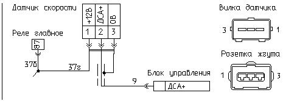

главная → коды ГАЗ
Код 055—неисправность датчика скорости автомобиля (ДСА)
- Причина 1: датчик не подключен к жгуту проводов.
- Причина 2: наличие воды в соединителе датчика.
- Причина 3: замыкание на массу сигнального провода датчика.
- Причина 4: обрыв сигнального провода датчика.
- Причина 5: замыкание на бортсеть сигнального провода датчика.
- Причина 6: обрыв экранирующей оболочки проводов датчика или жгута.
- Причина 7: обрыв провода электропитания датчика.
- Причина 8: перепутано подключение проводов электропитания датчика.
- Причина 9: неисправность датчика скорости автомобиля.
- Причина 10: неисправность блока управления двигателем.
- Причина 11: неисправность шестерни привода датчика скорости.
- Способы проверки исправности цепи датчика.
Датчик не подключен к жгуту проводов

- Проверьте подключение датчика к жгуту проводов.
- Если вилка кабеля датчика подключена к розетке жгута проводов, то проверьте состояние контактной группы розетки жгута. Неисправные контакты замените.
- После устранения неисправности включите зажигание, запустите двигатель и при движении автомобиля на скорости 30..50 км/ч проконтролируйте отсутствие кода неисправности «055».
Наличие воды в соединителе датчика
- Если подключение датчика к розетке жгута проводов нормальное, то отсоедините от датчика розетку жгута проводов и проверьте наличие воды в его соединителе. При необходимости вытряхните воду из вилки и розетки соединителя датчика, очистите контакты от грязи.
- После устранения неисправности включите зажигание, запустите двигатель и при движении автомобиля на скорости 30..50 км/ч проконтролируйте отсутствие кода неисправности «055».
Замыкание на массу сигнального провода датчика
- Внимательно осмотрите целостность кабеля датчика и его оболочки. Возможно повреждение кабеля.
- Для проверки исправности цепей отсоедините датчик и блок от жгута проводов. При отключенном зажигании проверьте омметром соединение цепи «9» жгута с массой двигателя: от контакта «2» розетки датчика до металлических деталей двигателя.
- При необходимости устраните неисправность указанных цепей.
- После устранения неисправности включите зажигание, запустите двигатель и при движении автомобиля на скорости 30..50 км/ч проконтролируйте отсутствие кода неисправности «055».
Обрыв сигнального провода датчика
- Внимательно осмотрите целостность кабеля датчика и его оболочки. Возможно повреждение кабеля.
- Для проверки исправности цепи жгута отсоедините датчик и блок от жгута проводов.
- При отключенном зажигании проверьте омметром соединение цепи «9» от контакта «2» («ДСА+») розетки датчика до контакта «9» розетки блока.
- После устранения неисправности включите зажигание, запустите двигатель и при движении автомобиля на скорости 30..50 км/ч проконтролируйте отсутствие кода неисправности «055».
Замыкание на бортсеть сигнального провода датчика
- Отсоедините защитный чехол розетки датчика.
- Включите зажигание и проверьте вольтметром напряжение между контактами розетки датчика «2» («ДСА+») и «3» («ДСА-0В»).
- Если напряжение около «12 В», то отсоедините датчик и блок управления от жгута проводов. Отключите аккумулятор от бортсети и проверьте омметром связь контакта «2» розетки датчика и контактов «18», «27» и «37» розетки блока.
- После устранения неисправности включите зажигание, запустите двигатель и при движении автомобиля на скорости 30..50 км/ч проконтролируйте отсутствие кода неисправности «055».
Обрыв экранирующей оболочки проводов датчика или жгута
- Для проверки вероятной неисправности отсоедините датчик и блок от жгута проводов и при отключенном зажигании проверьте омметром целостность экранирующей оплетки провода «9» кабеля: от контакта «3» розетки датчика до контакта «19» розетки блока.
- При необходимости дополнительно осмотрите качество опресовки и соединения оболочек экранов проводов в теле жгута.
- После устранения неисправности включите зажигание, запустите двигатель и при движении автомобиля на скорости 30..50 км/ч проконтролируйте отсутствие кода неисправности «055».
Обрыв провода электропитания датчика
- Отсоедините защитный чехол розетки жгута проводов датчика.
- Включите зажигание и проверьте вольтметром напряжение между выводами «1» («+12В») и «3» («0В») розетки датчика. Если измеренное напряжение близко к нулю, то вероятно имеет место обрыв цепи «37е» электропитания датчика.
- Отсоедините жгут проводов от датчика и блока управления и проверьте омметром целостность цепи «37е» между контактом «1» розетки датчика и контактом «37» розетки блока управления.
- После устранения неисправности включите зажигание, запустите двигатель и при движении автомобиля на скорости 30..50 км/ч проконтролируйте отсутствие кода неисправности «055».
Перепутано подключение проводов электропитания датчика
- Снимите защитный чехол с розетки жгута датчика и при включенном зажигании проверьте вольтметром напряжение между выводами «1» (+12В) и «3» (0В) датчика—оно должно быть равно напряжению борсети.
- Если напряжение близко к нулю, то отсоедините датчик и блок управления от жгута проводов и проверьте омметром ошибочную установку контактных гнезд в колодку розетки датчика при условии:
- если контакт «1» («ДСА+12В») розетки датчика соединен с контактом «19» розетки блока,
- а контакт «3» («ДСА-0В») розетки датчика соединен с контактом «37» розетки блока.
- При необходимости переустановите провода в колодке датчика в соответствии с электрической схемой.
- После устранения неисправности включите зажигание, запустите двигатель и при движении автомобиля на скорости 30..50 км/ч проконтролируйте отсутствие кода неисправности «055».
Неисправность датчика скорости автомобиля
- Для проверки исправности датчика, снимите его с КПП автомобиля и, не отсоединяя датчик от жгута проводов, при включенном зажигании проверьте напряжение на выходе датчика между выводом «2» («ДСА+») и «3» («ДСА-0В»). При этом медленно вращайте ось датчика.
- Это напряжение должно скачкообразно изменяться от 5,0 В до менее 1,0 В и обратно.
- Если напряжение остается постояннным, то датчик неисправен и подлежит замене.
- После устранения неисправности включите зажигание, запустите двигатель и при движении автомобиля на скорости 30..50 км/ч проконтролируйте отсутствие кода неисправности «055».
Неисправность блока управления двигателем

- Отсоедините блок управления от жгута проводов и внимательно осмотрите целостность контактов розетки жгута и вилки блока.
При необходимости отрихтуйте контакты соединителя или замените их. При обнаружении воды в соединителе блок необходимо снять, остатки
воды удалить, просушить блок при температуре не выше 85°C.
- Подключите к системе контрольный блок управления.
- После устранения неисправности включите зажигание, запустите двигатель и при движении автомобиля на скорости 30..50 км/ч проконтролируйте отсутствие кода неисправности «055».
- Если код «055» не регистрируется на контрольном блоке, то замените тестируемый блок на исправный.
Неисправность шестерни привода датчика скорости
- Вероятно имеет место повреждение зубьев шестерни привода датчика скорости или шестерня не установлена.
- Снимите шестерню и осмотрите его. Если зубья шестерни или ее привода имеют сколы или деформацию, раковины—замените ее.
- После устранения неисправности включите зажигание, запустите двигатель и при движении автомобиля на скорости 30..50 км/ч проконтролируйте отсутствие кода неисправности «055».
Способы проверки исправности цепи датчика
- Выполните разгон автомобиля на мерном участке и проконтролируйте характер появления текущего кода неисправности «055»:
- если код постоянный, то см. причины: 1, 3..11 .
- если код непостоянный, то см. причины: 2, 6, 9, 10, 11.
- После устранения неисправности включите зажигание, запустите двигатель и при движении автомобиля на скорости 30..50 км/ч проконтролируйте отсутствие кода неисправности «055».
|